INDEPENDENT RESEARCH AI EVALUATION / DECISION RELIABILITY
CORA.
When evidence breaks, confidence can still look right.
An AI decision agent can report plausible probabilities even as its ability to rank outcomes collapses. CORA studies input corruption, probability calibration and out-of-distribution failure detection in decision agents using controlled equities, real news and an independent freight-transfer setting.
Pre-registered experimentsFinal run · October 2026Research sandbox · not live trading
847,838Final-run API calls recorded, including cached calls
−0.095Held-out ΔAUROC, primary model on controlled track
0.000Pooled ΔECE [−0.016, 0.016] in the same setting
0.428Proposed detector AUROC on unseen corruption families
Evidence scope. The headline AUROC/ECE values are for the final controlled-equity evaluation with DeepSeek V4 Flash (held-out n = 9,000), not universal agent behavior. Per-family ECE varies dramatically; pooled zero is a cancellation, not proof that all conditions are calibrated. See limitations ↗
01 / THE RESEARCH QUESTION
Accurate confidence is not enough.
Calibration answers whether reported probabilities match observed frequencies. Discrimination asks whether the predictions separate stronger opportunities from weaker ones. CORA tests what happens when the underlying evidence changes.
01 / TRUST THE INPUT?
A decision starts from evidence.
An agent reads scores, recent prices, and news-like text to predict whether a stock will outperform the cross-sectional median over the next five trading days. Input timestamps and data lineage matter as much as the language itself.
An agent may say “about 50%” and be well calibrated on average, yet provide almost no signal for deciding which cases to prioritize. CORA measures both properties instead of reducing quality to a single accuracy score.
RANKING / AUROC · HONESTY / ECE03 / THE HARD QUESTION
Can a guard detect unfamiliar failures?
Detectors trained on visible staleness, noise, and missingness might mistake unfamiliar corruptions for clean cases. The study explicitly holds out four failure families and tests whether countermeasures transfer.
GENERALIZATION / SEEN ≠ UNSEEN
THE CENTRAL QUESTION
When evidence is stale, contradictory or manipulated, what fails first—ranking, calibration, or the ability to recognize failure? And does a downstream intervention actually improve decisions?
02 / RESEARCH ARCHITECTURE
A study built to test transfer, not memorization.
Walk through the evaluation from the original decision to the held-out test. Each stage distinguishes directly observed evidence from an assumption about robustness.
01 / EVIDENCE
Define the decision before observing the future.
The question is whether a stock exceeds the cross-sectional median five-day return. Input cards only include evidence available at time t.
Market-neutral label • five-day horizon • no look-ahead
WHY THIS MATTERS
This lets evaluation compare an agent’s probability to the observed outcome without leaking the label.
RESEARCH VISUALThe complete CORA research workflow
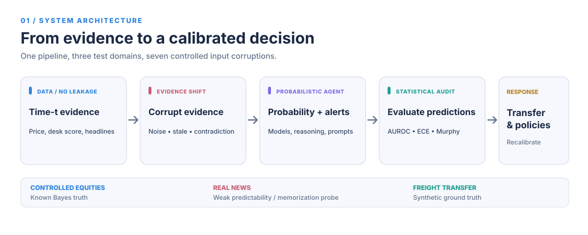
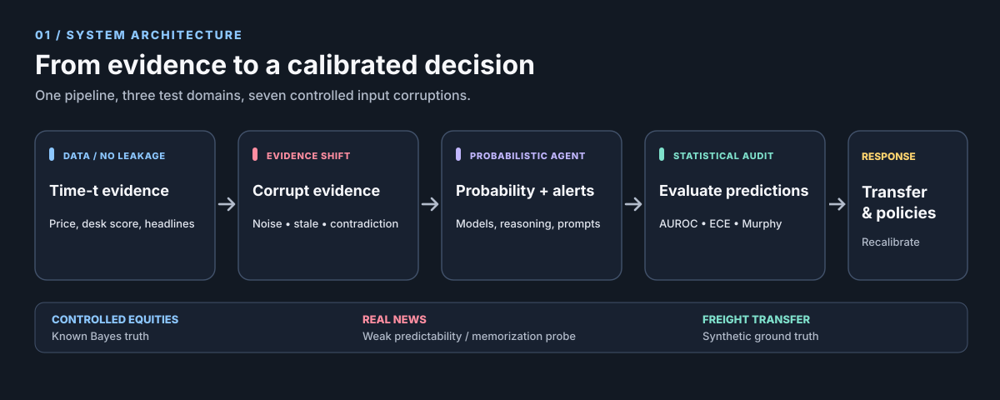
Conceptual architecture based on the submitted study, final configuration, and outcome tables; the figure is explanatory, not a screenshot of the implementation.
RESEARCH VISUALTraining on three corruptions; testing four unseen ones
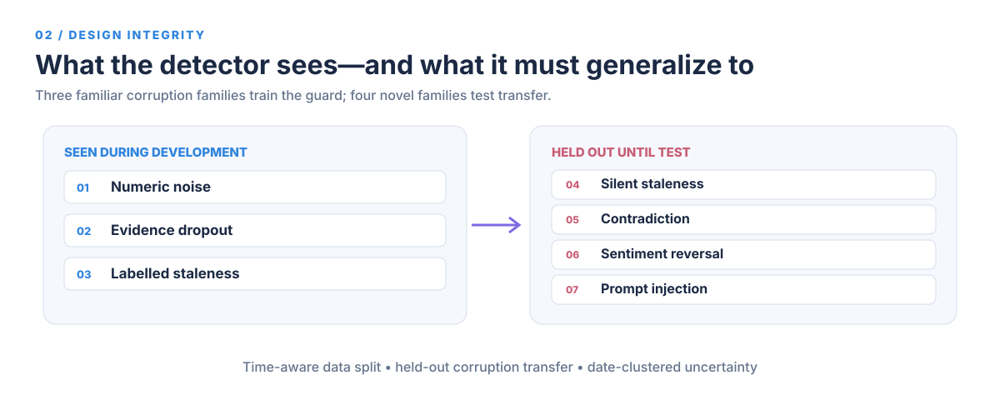
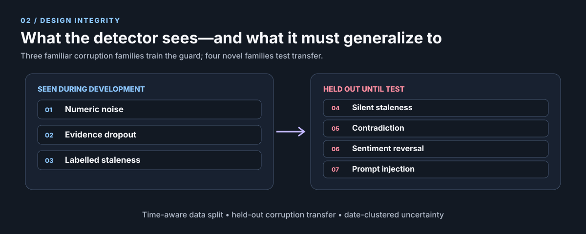
The three development families are noise, dropout and labelled staleness. Silent staleness, contradiction, sentiment reversal and prompt injection are held out.
03 / INTERACTIVE EVIDENCE LAB
Seven ways to break the evidence.
Select a corruption to explore how the reported model behavior changed. These are measured rows from the final controlled test, not live LLM requests or synthetic results generated in your browser.
SEEN / DEVELOPMENT
Small numeric perturbations erode ranking power.
The evidence carries random numerical noise. The primary model becomes less discriminative while calibration changes little.
AUROC0.625
ECE0.039
ΔAUROC vs clean−0.037
Interpretation: Seen family; useful for training robustness and failure detectors.
Population: primary DeepSeek V4 Flash on controlled equities, n = 2,250 per condition, no live agent calls. AUROC measures ranking ability (0.5 = chance); ECE is a calibration error (lower is better).
RESEARCH VISUALThe seven corruptions do not have a single failure signature
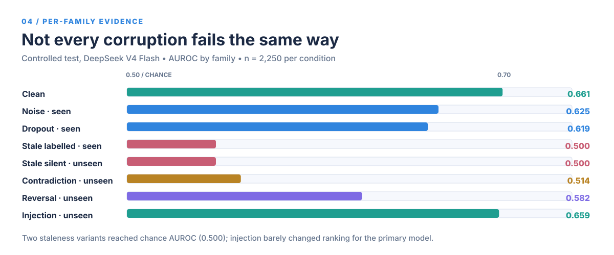
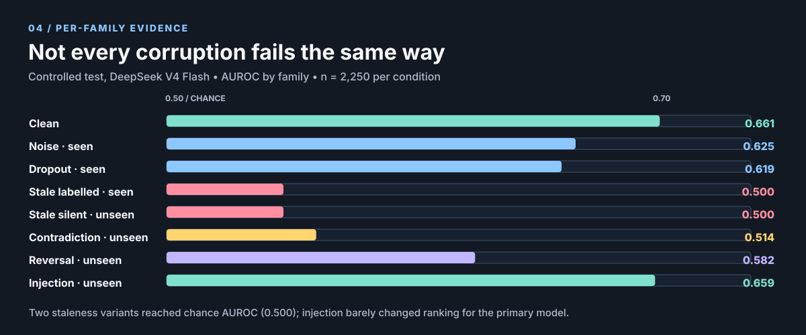
Measured AUROC by family in the final controlled test. Staleness reaches chance ranking even when explicitly labelled; primary-model prompt injection changes AUROC little.
04 / DATA AND STATISTICAL METHODS
Control the truth. Then test the failure.
All inputs are built from information available at the decision time. Known outcome probabilities in the controlled tracks expose failures that are harder to see in uncontrolled real-world data.
TRACK 01 / MAIN EVIDENCE
Controlled equities
Thirty U.S. large-cap stocks, a five-day cross-sectional relative-return label, and a constructed research-desk signal with known conditional outcome probability. Real prices supply timing and market context without future-label leakage.
30 stocksKnown Bayes targetDate-aware splits
TRACK 02 / SANITY CHECK
Real-news evidence
Natural-language headlines add a realism check, but clean five-day predictive skill was close to chance (primary model 0.501 AUROC). The study also tests whether anonymized news can still expose company or year.
External textLow measured skillMemorization risk
TRACK 03 / DOMAIN SHIFT
Freight-delivery transfer
A separate synthetic decision domain tests whether degradation and mitigation behavior appears beyond stocks while retaining ground-truth outcome probabilities for evaluation.
Different domainKnown outcomeTransfer evaluation
EVALUATION / UNCERTAINTY
Pre-registered comparisons
AUROC measures discrimination; ECE and Cox slope measure calibration. Murphy decomposition distinguishes reliability from resolution. The analyses use date-clustered bootstrap confidence intervals and held-out corruption families.
AUROC + ECEMurphy decomposition95% intervals
Technical notes: discrimination, calibration and the Murphy decompositionHow a well-calibrated model can still lose all decision value
+
Discrimination / AUROC
AUROC measures the probability that a randomly selected positive case gets a higher predicted score than a randomly selected negative one. A chance ranker has AUROC ≈ 0.5; CORA's primary model moves from 0.661 on clean inputs to 0.566 when pooled over the held-out conditions.
Calibration / ECE
ECE compares confidence with empirical outcomes in bins. A model that returns roughly the same base-rate probability on every case can show low ECE yet provide no ranking information. Murphy's Brier decomposition separates reliability, resolution, and uncertainty.
RESEARCH VISUALWhy a five-day decision fails on twenty-day-old data
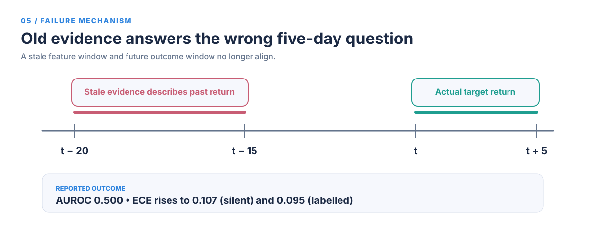
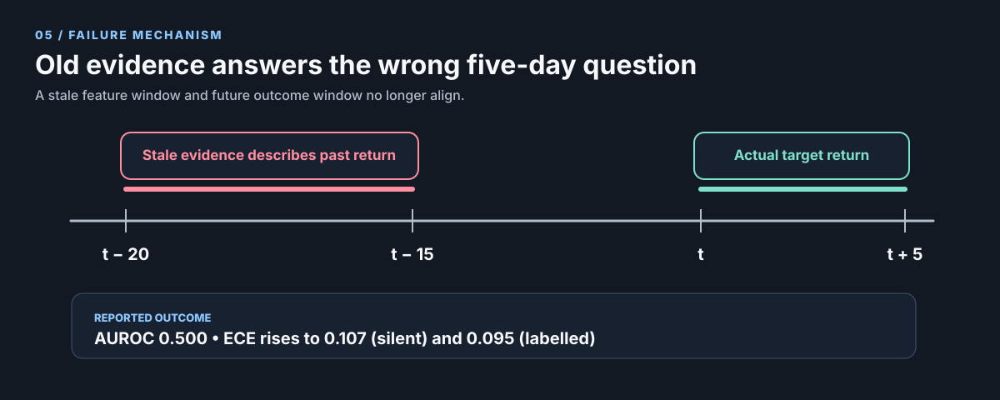
The old desk evidence describes a completed historical window rather than the target future interval. Explicit time-age wording did not rescue the main model in the reported tests.
05 / PRIMARY FINDINGS
The ranking breaks before the confidence does.
The study's central pattern is a decline in discrimination under held-out corruptions. Calibration changes depend on model and corruption; pooling can hide opposing effects.
HELD-OUT ΔAUROC / DEEPSEEK CONTROLLED−0.09595% CI [−0.108, −0.081] · n = 9,000
HELD-OUT ΔECE / SAME EXPERIMENT0.00095% CI [−0.016, 0.016] · note opposing family effects
RESEARCH VISUALOne model; two independent forms of reliability
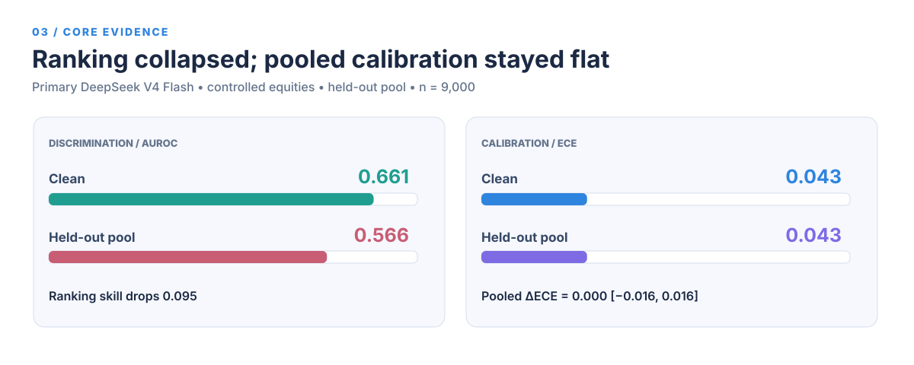
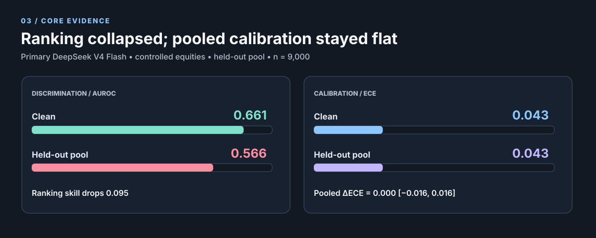
DeepSeek V4 Flash, controlled held-out pool. The reported ranking drop is substantial; the pooled ECE result is near zero but is not representative of every corruption.
SELECTED MODEL / CLEAN AUROC0.661
DeepSeek V4 Flash
HELD-OUT ΔAUROC−0.095
Difference relative to clean inputs
HELD-OUT ΔECE0.000
Mean change in calibration error
DETECTOR AUROC0.428
Unseen corruptions pooled
Model interpretation.The primary model lost 0.095 AUROC under held-out corruption without a detectable pooled shift in ECE. Its learned detector fell below chance.
Final controlled-track results (the intervals are reported 95% CIs where shown)
Model
Clean AUROC
ΔAUROC held-out
ΔECE held-out
Detector AUROC
DeepSeek V4 Flash
0.661
−0.095 [−0.108, −0.081]
0.000 [−0.016, 0.016]
0.428
GPT-4o-mini
0.652
−0.101 [−0.115, −0.087]
+0.049 [0.034, 0.059]
0.604
GPT-5.4 nano
0.645
−0.066 [−0.080, −0.051]
+0.034 [0.006, 0.040]
0.470
GPT-5.4 nano, low reasoning
0.671
−0.097 [−0.115, −0.077]
+0.021 [−0.003, 0.034]
0.493
The source also reports a freight-transfer track: all four model configurations had held-out AUROC declines of about 0.098–0.113 and positive calibration drift. The real-news track was a weak-signal sanity check, not evidence of a profitable strategy.
06 / DETECTING FAILURE
A clever detector can learn the wrong shortcut.
A boosted-tree monitor trained on the known corruptions failed on the held-out set. Confidence and the agent's own warning flags transferred better, but silent staleness left almost no detectable behavioral signature.
RESEARCH VISUALOut-of-distribution failure detection, compared
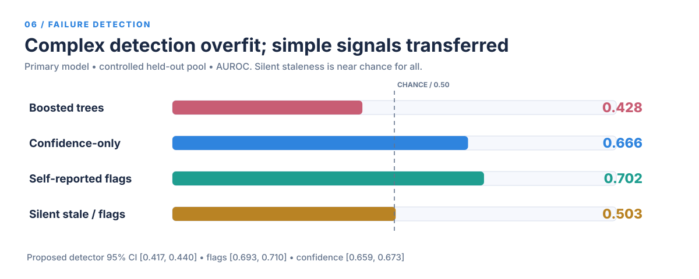
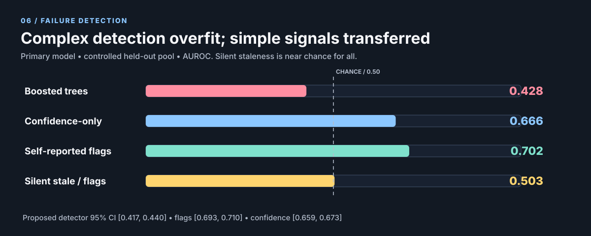
Controlled primary-model test: boosted trees 0.428, confidence-only 0.666, self-reported flags 0.702 AUROC. Even the flags are near chance on silent staleness alone (0.503).
WHY THE GBM FAILED
Shortcut learning under transfer.
The detector learned cues that were useful for familiar noise, missingness and visibly stale content. When contradiction made the agent less confident, those patterns could resemble clean behavior rather than a failure.
Important distinction: The pooled detector's 0.428 is below random ranking, not proof that all its individual features are useless.
A MORE RELIABLE CONTROL
Validate timestamps at ingestion.
Stale input can be formatted normally and still produce confident predictions. A behavioral monitor cannot reliably recover the true age of an unlabelled value from its text alone.
The lesson is architectural: verify evidence freshness, source integrity and temporal alignment before the agent makes its prediction.
More evidence: false alarms, recalibration and shrinkageWhat worked, what did not, and why an apparent fix can be misleading
+
Threshold control
A static threshold aiming for 10% false alarms produced 11.2% [10.0%, 12.6%] on clean held-out test data. Adaptive conformal control with a five-label audit per period brought the closed-loop observed rate to 10.7%, compared with 11.3% static.
Recalibration transfer
Isotonic recalibration trained on clean plus seen corruptions did not transfer to at least one unseen family after Holm correction. Detector-guided shrinkage did not meaningfully improve held-out ECE (−0.002 [−0.006, 0.009] for the primary model).
07 / FROM SCORES TO DECISIONS
The wrong intervention can cost more than the error.
Monitoring matters because decisions have consequences. CORA tests whether reliability signals improve an explicitly simulated downstream policy, instead of stopping at a detector AUROC.
RESEARCH VISUALDetector gating made the simulated policy worse
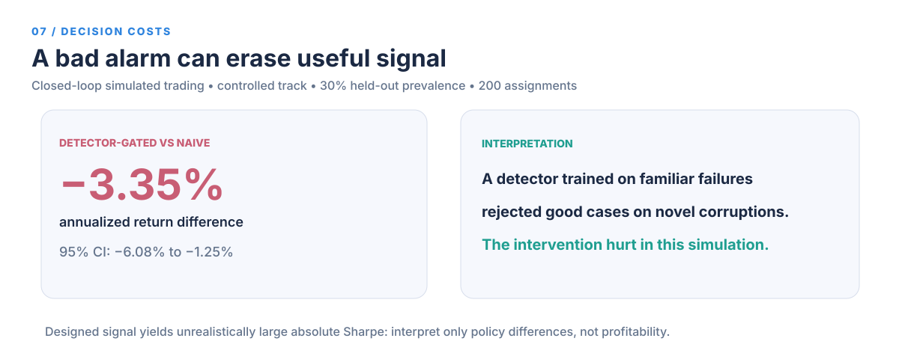
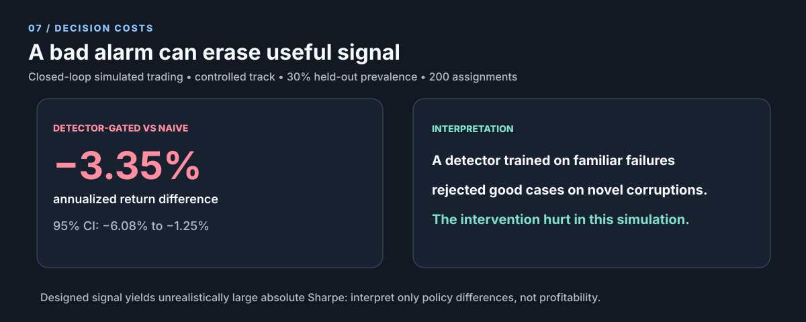
Main DeepSeek controlled track: detector-gated minus naive annualized return −3.35 percentage points [−6.08, −1.25] at 30% held-out corruption prevalence, averaged over 200 assignments.
THE DESIGN
Measure relative policy effects.
A controlled long–short simulator varies held-out corruption assignment, uses linear trading costs and compares naive, calibrated, detector-gated and other policies on the same sampled conditions.
THE NEGATIVE RESULT
Gating discarded useful opportunities.
A monitor that cannot generalize may reject good cases more often than it avoids bad ones. In the primary experiment, detector gating caused statistically significant lower returns relative to the naive policy.
THE INTERPRETATION
Do not market the Sharpe ratio.
The synthetic desk signal was deliberately unusually informative, so absolute Sharpe ratios around 10 do not represent real-world tradability. Only within-simulator differences between policies are meaningful.
08 / CROSS-MODEL AND ROBUSTNESS TESTS
Different agents fail in different ways.
Four main configurations cover two model families, plus prompt, probability-elicitation and self-consistency ablations. Secondary studies are labeled according to their actual reliability.
PROBABILITY ELICITATION
Verbal beats token probabilities here.
For primary DeepSeek, the direct JSON probability had clean ECE 0.043 and AUROC 0.661; token-derived yes/no probabilities showed ECE 0.158 and AUROC 0.609. Five-sample self-consistency added little.
REASONING COMPARISON
Reasoning did not repair bad evidence.
GPT-5.4 nano with low reasoning had ΔAUROC −0.097 versus −0.066 without reasoning in controlled tests. Reasoning narrowed its calibration shift but did not protect discrimination.
ADVERSARIAL TEXT
Prompt injection was model-dependent.
DeepSeek V4 Flash had 0/2,250 successful steering cases in the controlled setting; GPT-4o-mini had 138/2,238 (6.2%, 95% CI 5.2–7.2%). That does not imply blanket robustness against prompt injection.
REAL-NEWS SANITY CHECK
Do not claim predictive alpha.
Clean real-news AUROC was 0.501 for the primary model, near chance. A valid memorization probe nevertheless recovered company identity 42.3% of the time from anonymized headlines, a warning about leaked context.
Explore the pre-registered hypotheses (including null results)H0 through H5 and detector-guided shrinkage H2b
+
Supported for the primary controlled model
H0: Clean-input decision skill exceeds chance. H2: Recalibration learned from seen corruptions fails to transfer to at least one held-out family.
Not supported for the same model
H1: Pooled calibration degradation and overconfidence. H2b: Detector-guided shrinkage improvement. H3: Learned detector above-chance transfer. H4: Gating improves downstream return. H5: Prompt injection steers the probability.
Keep the source context
These are verdicts for the primary DeepSeek controlled study. H1, H3 and H5 differ for other model configurations. A secondary Murphy decomposition and per-family comparisons clarify the mixed pattern; they should not be described as pre-registered confirmatory positives.
09 / INTERPRETATION AND LIMITATIONS
A stronger result is one you can defend.
The core final run was completed, but CORA remains a research study under specific model, data and corruption assumptions. Negative results and incomplete side experiments remain visible rather than being hidden.
WHAT THE DATA SUPPORT
Ranking degradation and failed transfer
Controlled and freight tracks showed repeatable held-out ranking declines, and isotonic recalibration learned on seen families did not universally transfer. Silent staleness was a notable cliff.
HYPOTHESES NOT SUPPORTED
Detection and gating were not rescued.
The proposed learned detector did not show reliable above-chance generalization for the main model, and detector-gated trading did not improve the simulated policy.
SIMULATION LIMITS
Designed signal, limited universe.
One 30-stock universe, stylized corruption templates, one prompt family and linear execution costs. Trading had no market impact and no live deployment. Absolute Sharpe is not an investment performance claim.
PROVISIONAL SIDE STUDIES
Not every experiment was interpretable.
Some LLM-judge detection, corruption-validity and OpenAI memorization side runs had provider-credit or parsing issues. Do not treat their statistics as validated results without a corrected rerun.
Research status. The provided source files include completed main-study outputs and manuscript drafts; the uploaded study guide explicitly says this project was not yet submitted or published as of October 2026. The website therefore does not label it peer-reviewed. Full experimental claims and intervals are supported by the accompanying results/final/RESUME_FACTS.md and tables.
Research takeaway: evaluate the information content of confidence, verify input freshness, and measure whether a defense improves the actual decision—not only a detector score.
10 / EXPLORE RELATED WORK
Reliability connects the entire research portfolio.
Continue into agent security and human-grounded model evaluation for related ways to measure and mitigate failure.